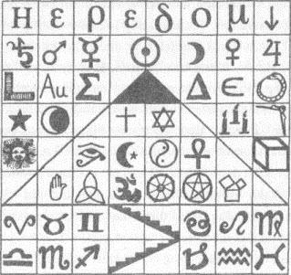
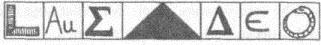

126. BÖLÜM
Mabet Evi’ndeki kütüphane, D.C.’nin en eski kamuya açık okuma odasıydı. Zarif kitap raflarında, Ahiman Rezon, The Secrets of a Prepared Brother{99} isimli nadide eserlerin de bulunduğu çeyrek milyon cilt dururdu. Bununla birlikte kütüphanede, kıymetli mason madalyonları, tören gereçleri ve hatta Benjamin Franklin’in elyazısıyla yazılmış çok değerli bir kitap sergilenirdi.
Ama Langdon’ın kütüphanede en sevdiği hazine, çok az kişinin fark ettiği bir şeydi.
Yanılsama.
Solomon uzun zaman önce ona, uygun noktadan bakıldığında, kütüphanedeki okuma masasıyla altın masa lambasının belirgin bir görsel yanılsama oluşturduğunu göstermişti... bir piramit ve onun parlayan altın kapak taşı görünüyordu. Solomon bu yanılsamanın, uygun bir açıdan bakan herkesin, farmasonluğun gizemlerini görebileceğini sessizce hatırlattığını düşündüğünü söylemişti.
Ama bu gece, farmasonluğun gizemleri gözler önüne serilmişti. Langdon, Üstadı Muhterem Peter Solomon ile Mason Piramidi’nin karşısında oturuyordu.
Peter gülümsüyordu. “Robert, bahsettiğin ‘kelime’ efsane değil. Gerçek. ”
Masanın karşı tarafına bakan Langdon, sonunda konuştu. “Ama... anlamıyorum. Bu nasıl mümkün olabilir?”
“Kabul edilemeyecek kadar zor olan ne?”
Ortak bir anlayışa sahip olduklarını görmek için bakışlarını Peter’a diken Langdon, hepsi! demek istedi. “Kayıp Kelime’nin gerçek olduğuna inandığını söylüyorsun... ve gerçek bir gücü olduğuna, öyle mi?”
Peter, “Muazzam bir güç,” dedi. “Antik Gizemleri çözerek, insanlığı dönüştürme gücüne sahip.”
Langdon, “Bir kelime mi?” diyerek sorguladı. “Peter ben inanmıyorum, bir kelimenin...”
Peter sükûnetle, “İnanacaksın,” dedi.
Langdon sessizce baktı.
Ayağa kalkıp masanın etrafında gezinmeye başlayan Solomon. “Bildiğin gibi,” diyerek devam etti. “Kayıp Kelime’nin yeniden keşfedileceği bir günün geleceği uzun zamandan beri kehanet edilir... o gün her şey açığa çıkacak... ve insanlık bir kez daha unuttuğu gücüne kavuşacaktır.”
Langdon, Peter’ın kıyametle ilgili yaptığı konuşmayı anımsadı. Pek çok kişi apocalypse’i yanlış yorumlayarak dünyanın dehşet verici sonu şeklinde algılıyordu, oysa kelimenin gerçek anlamı, eskilerin büyük bilgeliğe mal ettikleri bir “açığa çıkmadan” bahsediyordu. Yaklaşmakta olan Aydınlanma Çağı. Buna rağmen Langdon, böylesi büyük bir değişikliğin... bir kelime tarafından getirileceğine akıl erdiremiyordu.
Peter, masada altın kapak taşının yanında duran piramidi işaret etti. “Mason Piramidi,” dedi. “Efsanevi bireşim. Bu gece bir araya getirilmiş... ve tamamlanmış halde.” Altın kapak taşını saygıyla kaldırıp, piramidin üstüne yerleştirdi. Ağır altın parça, yerine tıklayarak kolayca oturdu.
“Bu gece dostum, daha önce hiç yapılmamış bir şeyi gerçekleştirdin. Mason Piramidi’ni bir araya getirdin, tüm şifrelerini çözdün ve sonunda... bunu ortaya çıkardın.”
Solomon bir kâğıt çıkarıp, masanın üstüne koydu. Langdon, Sekizinci Dereceden Franklin Karesi kullanılarak, yeniden yerleştirilen sembol tablosunu hemen tanıdı. Bu tabloyu Tapınak Odası’nda incelemişti.
Peter, “Bu sembol dizisini okuyup okuyamayacağını merak ediyorum. Ne de olsa, uzman sensin.”
Langdon tabloya bir göz attı.
Heredom, noktalı daire, piramit, merdiven...

Langdon içini çekti. “Peki dostum... Görebileceğin gibi, bu alegorik bir resimyazı. Dilinin gerçek olmaktan öte, mecazi ve sembolik olduğu belli.” Solomon kendi kendine güldü. “Simgebilim uzmanına basit bir soru sor da gör... Peki, bana ne gördüğünü söyle.”
Peter bunu gerçekten duymak istiyor mu? Langdon kâğıdı kendisine doğru çekti. “Aslında, daha önce de bakmıştım, en basit kelimelerle söylemek gerekirse, bu tablo... cennet ile cehennemi tasvir eden bir resim.” Şaşırmış görünen Peter kaşlarını havaya kaldırdı. “Ya?”
“Elbette. Resmin en üstünde, Heredom -Kutsal Ev- kelimesi var, ben bunu Tanrı’nın Evi diye yorumluyorum... veya cennet. ”
“Peki.”
“Heredom kelimesinden sonraki aşağı ok, resimyazının geri kalanının cennetin altındaki dünyada yer aldığını işaret ediyor... yani... dünyada. ” Langdon’ın gözleri tablonun alt kısmına kaydı. “Piramidin altındaki iki sıra, tüm âlemler arasında en aşağıda yer alan dünyayı -terra fırma- temsil ediyor. Buna uygun olarak, bu alt âlemler on iki eski astroloji işaretini içeriyor, ki bunlar, gökyüzüne bakıp, yıldızlarla gezegenlerin hareketlerinde Tanrı’nın elini gören ilk insanların ilkel dinlerini tasvir ediyor.” Sandalyesini kaydırarak yaklaşan Solomon tabloyu inceledi. “Peki, başka?”
Langdon, “Astrolojinin temelinde, büyük piramit yeryüzünden yükselir,” diyerek devam etti. “Cennete doğru uzanır... kayıp bilgeliğin ebedi sembolüdür. Tarihin büyük felsefeleri ve dinleri ile doludur... Mısırlı, Pisagorcu, Budist, Hindu, Müslüman, Musevi, Hıristiyan ve diğerleri... hepsi de yukarıya akıp bir arada kaynaşarak, piramidin dönüştürücü geçidine doğru huni şeklinde daralırlar... orada ise sonunda, birleşmiş, tek bir felsefeye dönüşürler.” Durdu. “Evrensel tek bir bilinç... kapak taşının üstünde asılı duran antik bir sembolle temsil edilen... Tanrı’nın ortak bir imgesi.” Peter, “Noktalı daire,” dedi. “Tanrı’nın evrensel sembolü.”
“Doğru. Tarih boyunca noktalı daire, tüm insanlar için her şey demekti; Güneş Tanrısı Ra, simya altını, her şeyi gören göz, Büyük Patlama’dan önceki tekillik noktası...”
“Evrenin Ulu Mimarı.”
Peter’ın, Tapınak Odası’nda noktalı daireyi Kayıp Kelime olarak yutturmaya çalışırken, aynı görüşü ileri sürmüş olabileceğini sezinleyen Langdon, başını salladı.
Peter, “Peki son olarak?” diye sordu. “Ya merdiven?”
Langdon bakışlarını, piramidin altındaki merdiven resmine indirdi. “Peter, senin de herkes kadar bildiğine eminim ki, bu farmasonluktaki Sarmal Merdiveni simgeliyor... Cennete yükselen Yakup’un merdiveni gibi... veya insanın ölümlü bedenini, daimi zihnine bağlayan sıralı omurga gibi... Merdiven, dünyevi karanlıktan yukarıdaki ışığa doğru çıkar.” Duraksadı. “Diğer semboller ise; hepsi de Antik Gizemleri destekleyen göksel, masonik ve bilimsel bir karışım görüntüsünde.”
Solomon çenesini sıvazladı. “Zekice bir yorum profesör. Elbette tablonun alegori gibi okunabileceğini kabul ediyorum ama...” Gözleri derinleşen bir esrarla parladı. “Bu semboller başka bir hikâyeyi daha anlatıyorlar. Çok daha gerçek bir hikâyeyi.”
“Ya?”
Solomon yeniden masanın etrafında gezinmeye başladı. “Bu gece Tapınak Odası’ndayken, öleceğime inandığımda bu tabloya baktım ve mecazın ötesinde, alegorinin ötesinde, bu sembollerin gerçekte bize ne anlattığını gördüm.” Durup, birden Langdon’a döndü. “Bu tablo, Kayıp Kelime’nin tam olarak gömülü bulunduğu yeri açıklıyor.”
“Bir daha söyler misin?” Sandalyesinde huzursuzca kıpırdanan Langdon, akşam yaşadığı travma yüzünden Peter’ın aklının karışmış olabileceğinden korkuyordu.
“Robert, efsanede Mason Piramidi her zaman bir harita -çok özel bir harita- olarak tasvir edilmişti, layık olan kimseye Kayıp Kelime’nin gizli yerini gösterecekti.” Langdon’ın önündeki sembol tablosuna hafifçe vurdu. “Sana garanti veririm, bu semboller tam olarak efsanenin söylediği şey... yani bir harita. Kayıp Kelime’ye inen merdivenleri bulacağımız yeri açıklayan özel bir şema.”
Endişeyle gülen Langdon, artık daha temkinli olmaya çalışıyordu. “Mason Piramidi efsanesine inansam bile, bu sembol tablosu bir harita olamaz. Şuna bir bak. Haritaya benzer yanı yok.”
Solomon gülümsedi. “Bazen bir şeyi bambaşka bir ışıkta görmek için, bakış açını biraz değiştirmen gerekebilir.”
Langdon bir kez daha baktı ama yeni bir şey göremedi.
Peter, “Sana bir soru sorayım,” dedi. “Masonlar köşe taşlarını neden binanın kuzeydoğusuna yerleştirirler biliyor musun?”
“Tabii, çünkü sabah ışıklarını ilk önce kuzeydoğu köşesi alır. Yeryüzünden ışığa yükselen mimarinin gücünü simgeler.”
Peter, “Evet,” dedi. “O halde, belki de ilk ışıkları görmek için oraya bakmalısın.” Tabloyu işaret etti. “Kuzeydoğu köşesine.”
Gözlerini yeniden sayfaya çeviren Langdon, bakışlarını üst sağ veya kuzeydoğudaki köşeye kaydırdı. Burada ↓ sembolü vardı.
Solomon’ın varmak istediği noktayı anlamaya çalışarak, “Aşağı ok var,” dedi. “Yani... Heredom’ın altında demek.”
Solomon, “Hayır, Robert, altında değil,” diye cevap verdi. “Düşün. Tablo mecazi bir labirent değil. Bir harita. Ve bir haritada aşağıyı gösteren yön oku...”
Şaşıran Langdon, “Güneyi gösterir!” diye bağırdı.
Şimdi heyecanla sırıtan Solomon, “Kesinlikle,” diye cevap verdi. “Güney! Haritada aşağısı güney demektir. Bundan başka, bir haritada Heredom kelimesi cennetin mecazi anlamı değil, coğrafi bir konumun ismi olmalıdır.” “Mabet Evi mi? Yani bu haritanın... bu binanın güneyini mi işaret ettiğini söylüyorsun?”
Kahkaha atan Solomon, ‘‘Tanrı’ya şükürler olsun!” dedi. “Sonunda anlamaya başladın.”
Langdon tabloyu inceledi. “Ama Peter... haklı olsan bile, bu binanın güneyi, otuz altı bin kilometreden uzun bir boylamın herhangi bir yeri olabilir.” “Hayır Robert. Efsaneyi göz ardı ediyorsun. Kayıp Kelime’nin D.C.’de bulunduğunu söyler. Bu da alanı önemli ölçüde daraltır. Bundan başka efsane, merdivenlerin üstünde büyük bir taşın durduğunu söyler... ve bu taşa antik dilde bir mesaj kazınmıştır... layık olanın bulabileceği bir işarettir.”
Langdon onun söylediklerini ciddiye almakta güçlük çekiyordu. Bulunduktan yerin güneyinde neresi olduğunu pek bilmese de yerin altındaki bir merdivenin üstünde, mesaj kazınmış dev bir taş bulunmadığına emindi.
Peter, “Taşa yazılı mesaj, gözlerimizin önünde,” dedi. Langdon’ın önündeki tablonun üçüncü satırını gösterdi. “Yazı bu Robert! Bulmacayı çözdün!” Sersemleyen Langdon, yedi sembolü inceledi.

Çözdüm mü? Langdon’ın, bu yedi farklı sembolün ne anlama geldiğine dair hiç fikri yoktu. Ayrıca ülkenin başkentinin herhangi bir yerine kazınmadıklarına da emindi... özellikle de merdivenin üstündeki dev bir taşa.
“Peter,” dedi. “Ben bunun neyi aydınlattığını anlamadım. D.C.’de şu mesajın kazındığı bir taş bilmiyorum.”
Solomon, onun omzuna hafifçe vurdu. “Yanından geçtin ama görmedin. Hepimiz öyle yaptık. Tıpkı gizemler gibi o da açıkça görülecek bir yerde. Ve bu gece, bu yedi sembolü gördüğümde, efsanenin gerçek olduğunu hemen anladım. Kayıp Kelime, D.C.’de gömülü... Ve üstüne yazı kazınmış devasa bir taşın altındaki uzun merdivenin dibinde yatıyor.” Şaşıran Langdon sessizliğini korudu.
“Robert, bu gece gerçeği öğrenmeyi hak ettiğine inanıyorum.”
Az önce duyduklarını sindirmeye çalışan Langdon, Peter’a baktı. “Kayıp Kelime’nin gömülü olduğu yeri bana mı söyleyeceksin?”
Solomon gülümseyerek ayağa kalkarken, “Hayır,” dedi. “Sana göstereceğim.”
Beş dakika sonra Langdon, Escalade’in arka koltuğunda Peter Solomon’ın yanına yerleşiyordu. Sato park yerinin karşı tarafından yaklaşırken, Simkins direksiyona geçti.
Sigarasını yakan Sato, “Bay Solomon?” dedi. “Az önce istediğiniz telefonu açtım.”
Peter açık pencereden, “Ve?” diye sordu.
“Size içeri giriş izni vermelerini istedim.”
“Teşekkür ederim.”
Şüpheyle bakan Sato, onu inceledi. “Çok sıradışı bir istek olduğunu söylemek zorundayım.”
Solomon sanki aldırmıyormuş gibi omuzlarını silkti.
Aracın etrafından dolaşıp, Langdon’ın oturduğu tarafa giden Sato, Solomon’ın üzerine varmadı.
Langdon camını aşağı indirdi.
Sato, buz gibi bir sesle, “Profesör,” dedi. “Bu gece her ne kadar bize gönülsüzce yardım etmiş olsanız da başarılı olmamızda önemli bir rol oynadınız... Bu nedenle, size teşekkür ederim.” Sigarasından uzun bir nefes çekip, yan tarafa fırlattı. “Y,ine de son bir tavsiyem olacak. Bir dahaki sefere size üst düzey bir CIA yetkilisi ulusal güvenlik meselesi olduğunu söylediğinde...” Simsiyah gözlerinden ateş saçarak, “Saçmalıklarınızı Cambridge’e saklayın,” dedi.
Langdon konuşmak için ağzını açtı ama Başkan Inoue Sato çoktan arkasını dönüp, park yerinde bekleyen helikoptere doğru yürümeye başlamıştı.
Omzunun üstünden bakan Simkins’in yüzü ifadesizdi. “Beyler hazır mısınız?”
Solomon, “Aslında,” dedi. “Bir dakika.” Koyu renkli, katlanmış bir bez parçası çıkarıp Langdon’a uzattı. “Robert, gitmeden önce bunu takmanı istiyorum.”
Şaşıran Langdon bezi inceledi. Siyah kadifedendi. Açtığında masonik bir gözbağı -birinci derece adayının taktığı geleneksel gözbağı- tuttuğunu fark etti. Bu da ne?
Peter, “Gideceğimiz yeri görmemeni tercih ederim,” dedi.
Langdon, Peter’a döndü. “Yolculukta gözlerimi bağlamı mı istiyorsun?”
Solomon sırıttı. “Benim sırrım. Benim kurallarım.”